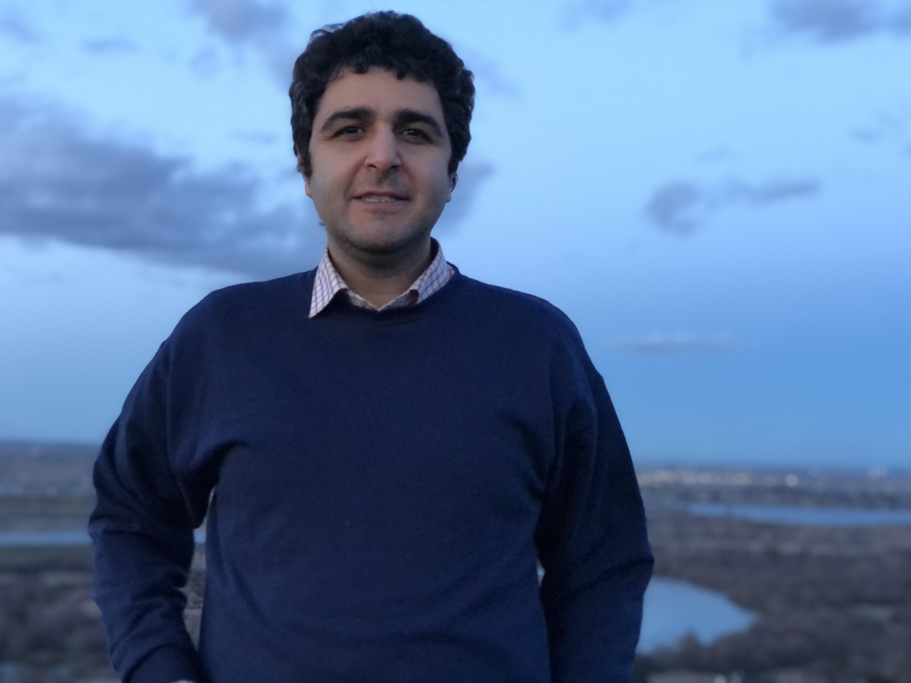

About Me
I am a senior research scientist at Google DeepMind.
My research interests are deep learning, machine learning, and artificial intelligence, in general.
As a research scientist, I work on continual and lifelong learning, multitask and transfer learning, understanding the training dynamics of deep neural networks and reinforcement learning. These research are inline with DeepMind's mission towards Aritifical General Intelligence.
As an applied scientist and engineer, I work on applications of machine learning, specifically using recommendation and predictive models, meta learning, causal inference and reinforcement learning to improve Google's products in areas such as YouTube, Cloud and Sales.
I received my Ph.D. in 2018 in Computational Science and Engineering from Georgia Institute of Technology, under the supervision of Hongyuan Zha and Le Song. I used to work on modeling and optimization of events data, stochastic point processes, and dynamics of and on the networks. Prior to that, I received my M.Sc. in Artificial Intelligence from the Computer Engineering Department at Sharif University of Technology and my B.Sc. from the same university in Software Engineering.
Amid the coronavirus outbreak, I'm currenly living in and working from the greater Seattle area.
Recent Publications
Architecture Matters in Continual Learning.
I Mirzadeh, A Chaudhry, D Yin, Nguyen, R Pascanu, D Gorur, M Farajtabar
[full paper, arXiv]Efficient Continual Learning in Neural Network Subspaces.
T Doan, I Mirzadeh,J Pineau, M Farajtabar
[full paper, arXiv]Wide Neural Networks Forget Less Catastrophically.
I Mirzadeh, A Chaudhry, D Yin, H Hu, R Pascanu, D Gorur, M Farajtabar
[full paper, arXiv]Linear Mode Connectivity in Multitask and Continual Learning. [paper] [code] [video]
I Mirzadeh*, M Farajtabar*, D Gorur, R Pascanu, H Ghasemzadeh.
International Conference on Learning Representations (ICLR), 2021Balance Regularized Neural Network Models for Causal Effect Estimation. [arXiv] [slides] [video]
M Farajtabar, A Lee, Y Feng, V Gupta, P Dolan, H Chandran, M Szummer.
Causal Discovery & Causality-Inspired Machine Learning Workshop (NeurIPS), 2020Understanding the Role of Training Regimes in Continual Learning. [paper] [full paper, arXiv] [slides] [code] [video]
I Mirzadeh, M Farajtabar, R Pascanu, H Ghasemzadeh.
Neural Information Processing Systems (NeurIPS), 2020Self-distillation Amplifies Regularization in Hilbert Space. [paper] [full paper, arXiv] [video]
H Mobahi, M Farajtabar, PL Bartlett.
Neural Information Processing Systems (NeurIPS), 2020A Maximum-entropy Approach to Off-policy Evaluation in Average-reward MDPs. [paper] [full paper, arXiv]
N Lazic, D Yin, M Farajtabar, N Levine, D Gorur, C Harris, D Schuurmans.
Neural Information Processing Systems (NeurIPS), 2020Learning to Incentivize Other Learning Agents. [paper] [full paper, arXiv] [code]
J Yang, A Li, M Farajtabar, P Sunehag, E Hughes, H Zha.
Neural Information Processing Systems (NeurIPS), 2020Orthogonal Gradient Descent for Continual Learning. [paper] [full paper, arXiv] [slides]
M Farajtabar, N Azizan, A Mott, A Li.
The International Conference on Artificial Intelligence and Statistics (AISTATS), 2020Dropout as an Implicit Gating Mechanism for Continual Learning. [paper] [code] [video]
I Mirzadeh, M Farajtabar, H Ghasemzadeh.
The IEEE Conference on Computer Vision and Pattern Recognition (CVPR) Workshops, 2020Improved Knowledge Distillation via Teacher Assistant. [paper] [full paper, arXiv] [code] [poster] [video]
I Mirzadeh*, M Farajtabar*, A Li, N Levine, A Matsukawa, H Ghasemzadeh.
The AAAI Conference on Artificial Intelligence (AAAI), 2020Dyrep: Learning Representations over Dynamic Graphs. [paper]
R Trivedi, M Farajtabar, P Biswal, H Zha
The International Conference on Learning Representations (ICLR), 2019Cross-View Policy Learning for Street Navigation. [paper]
A Li, H Hu, P Mirowski, M Farajtabar.
The IEEE International Conference on Computer Vision (ICCV), 2019Learning Time Series Associated Event Sequences with Recurrent Point Process Networks. [paper]
S Xiao, J Yan, M Farajtabar, L Song, X Yang, H Zha.
IEEE transactions on neural networks and learning systems, 2019Modeling Behaviors and Lifestyle with Online and Social Data for Predicting and Analyzing Sleep and Exercise Quality. [paper]
M Farajtabar, E Kıcıman, G Nathan, RW White.
International Journal of Data Science and Analytics, 2019More Robust Doubly Robust Off-policy Evaluation. [paper]
M Farajtabar*, Y Chow*, M Ghavamzadeh.
International conference on Machine Learning (ICML), 2018
Selected Recent Preprints
Task-agnostic Continual Learning with Hybrid Probabilistic Models.
P Kirichenko, M Farajtabar, D Rao, B Lakashminarayanan, N Levine, A Li, H Hu, A Wilson, R Pascanu.The Effectiveness of Memory Replay in Large Scale Continual Learning. [arXiv]
Y Balaji, M Farajtabar, D Yin, A Mott, A Li.Optimization and Generalization of Regularization-Based Continual Learning: a Loss Approximation Viewpoint. [arXiv]
D Ying, M Farajtabar, A Li, N Levine, A Mott.Adapting Auxiliary Losses using Gradient Similarity. [arXiv]
Y Du, WM Czarnecki, SM Jayakumar, M Farajtabar, R Pascanu, B Lakshminarayanan.
Experiences
Reseearch Scientist
|
|
Graduate Research Assistant
|
|
Research Intern
|
|
Research Intern
|
|
Research Intern
|
|
Software Engineering Intern
|
|
Pre-2018 Publications
Conference
Discrete Interventions in Hawkes Processes with Applications in Invasive Species Management. A. Gupta, M. Farajtabar, B. Dilkina and H. Zha. International Joint Conference on Artificial Intelligence, (IJCAI-ECAI ), 2018
Learning Conditional Generative Models for Temporal Point Processes S. Xiao, H. Xu, J. Yan, M. Farajtabar, X. Yang, L. Song, H. Zha. AAAI Conference on Artificial Intelligence, (AAAI), 2018
Wasserstein Learning of Deep Generative Point Process Models . S. Xiao*, M. Farajtabar*, X. Ye, J. Yan, L. Song, H. Zha. Neural Information Processing Systems ( NIPS ), 2017, Long Beach, CA, USA. * denotes equal contribution!
Fake News Mitigation via Point Processes Based Intervention M. Farajtabar, J. Yang, X. Ye, R. Trivedi, E. Khalil, S. Li, H. Xu, L. Song, H. Zha. International conference on Machine Learning (ICML), 2017, Sydney, Australia.
Recurrent poisson factorization for temporal recommendation. S. A. Hosseini, K. Alizadeh, A. Khodadadi, A. Arabzadeh, M. Farajtabar, H. Zha, H. R. Rabiee. International Conference on Knowledge Discovery and Data Mining (KDD), 2017, Halifax, Canada.
Distilling Information Reliability and Source Trustworthiness from Digital Traces. B. Tabibian, I. Valera, M. Farajtabar, L. Song and B. Schoelkopf, M. Gomez-Rodriguez. World Wide Web Conference (WWW), 2017, Perth , Australia.
Correlated Cascades: Compete or Cooperate. A. Zarezade, A. Khodadadi, M. Farajtabar, H. R. Rabiee, L. Song, and H. Zha. AAAI Conference on Artificial Intelligence (AAAI), 2017, San Francisco, USA.
Multi-stage Campaigning in Social Networks. M. Farajtabar, X. Ye, S. Harati, L. Song, H. Zha. Neural Information Processing Systems (NIPS), 2016, Barcelona, Spain.
Smart broadcasting: Do you want to be seen? M. Karimi, E. Tavakoli, M. Farajtabar, L. Song, M. Gomez-Rodriguez. International Conference on Knowledge Discovery and Data Mining (KDD), 2016, San Francisco, USA.
Learning Granger Causality for Hawkes Processes. H. Xu, M. Farajtabar and Hongyuan Zha. International conference on Machine Learning (ICML), 2016, New York, USA.
COEVOLVE: A Joint Point Process Model for Information Diffusion and Network Co-evolution. M. Farajtabar, Y. Wang, M. Gomez-Rodriguez, S. Li, Hongyuan Zha, L. Song. Neural Information Processing Systems (NIPS), 2015, Montreal, Quebec, Canada.
Dirichlet-Hawkes Processes with Applications to Clustering Continuous-Time Document Streams. N. Du, M. Farajtabar, A. Ahmed, A. J. Smola, L. Song. International Conference on Knowledge Discovery and Data Mining (KDD), 2015, Sydeny, Australia.
Learning Latent Variable Models by Improving Spectral Solutions with Exterior Point Methods. A. Shaban, M. Farajtabar, B. Xie, L. Song, B. Boots The Conference on Uncertainty in Artificial Intelligence (UAI), 2015, Amsterdam, Netherlands.
Back to the Past: Source Identification in Diffusion Networks from Partially Observed Cascades M. Farajtabar, M. Gomez-Rodriguez, N. Du, M. Zamani, H. Zha, L. Song. International Conference on Artificial Intelligence and Statistics (AISTATS), 2015, San Diego, CA, USA.
NetCodec: Community Detection from Individual Activities. T. Q. Long, M. Farajtabar, L. Song, H. Zha. SIAM Conference on Data Mining (SDM), 2015, Vancouver, British-Columbia, Canada.
Shaping Social Activity by Incentivizing Users. M. Farajtabar, N. Du, M. Gomez-Rodriguez, I. Valera, H. Zha, L. Song. Neural Information Processing Systems (NIPS), 2014, Montreal, Quebec, Canada.
The Network You Keep: Analyzing Persons of Interest Through Network Decomposition. S. Shokat-Fadaee, M. Farajtabar, R. Sundaram, J. A. Aslam. EEE/ACM International Conference on Advances in Social Networks Analysis and Mining (ASONAM), 2014, Beijing, China.
From Local Similarity to Global Coding; An Application to Image Classification. A. Shaban, H. R. Rabiee, M. Farajtabar, M. Ghazvininejad. Computer Vision and Pattern Recognition (CVPR), 2013, Portland, Oregon, USA.
Online Object Representation Learning and it's Application to Object Tracking. A. Shaban, H. R. Rabiee, M. Farajtabar, M. Fadaee. AAAI Spring Symposium on Lifelong Machine Learning (AAAI), 2013, Stanford, CA, USA.
Manifold Coarse Graining for Online Semi-supervised Learning. M. Farajtabar, A. Shaban, H. R. Rabiee, M. H. Rohban . The European Conference on Machine Learning and Principles and Practice of Knowledge Discovery in Databases (ECML PKDD), 2011, Athens, Greece
The Inefficiency of Equilibria in a Network Creation Game with Packet Forwarding. M. Fazli, K. Khodamoradi, M. Farajtabar, M. Ghazvininejad, M. Ghodsi. International Conference on Current Trends in Theory and Practice of Computer Science (SOFSEM), 2009, Czech Republic.
Workshop
Dropout as an Implicit Gating Mechanism for Continual Learning. Seyed-Iman Mirzadeh, Mehrdad Farajtabar, Hassan Ghasemzadeh. The IEEE Conference on Computer Vision and Pattern Recognition (CVPR) Workshops, 2020
Learning Latent Variable Models by Improving Spectral Solutions with Exterior Point Methods. A. Shaban, M. Farajtabar, B. Xie, L. Song, B. Boots Workshop on Non-convex Optimization for Machine Learning: Theory and Practice (NIPS) 2015, Montreal, Quebec, Canada.
Co-evolutionary Dynamics of Information Diffusion and Network Structure. M. Farajtabar, M. Gomez-Rodriguez, Y. Wang, S. Li, H. Zha, L. Song. Workshop on Activity and Events in Networks: Models, Methods Applications, in conjunction with International World Wide Web Conference (WWW) 2015, Florence, Italy.
Efficient Iterative Semi-supervised Classification on Manifold. M. Farajtabar, H. R. Rabiee, A. Shaban, A. Soltani-Farani. Workshop on Optimization Based Methods for Emerging Data Mining Problems, in conjunction with International Conference on Data Mining (ICDM) , 2011, Vancouver, British-Columbia, Canada.
Journal
Learning time series associated event sequences with recurrent point process networks. S Xiao, J Yan, M Farajtabar, L Song, X Yang, H Zha. IEEE transactions on neural networks and learning systems, 2019
Modeling behaviors and lifestyle with online and social data for predicting and analyzing sleep and exercise quality. M Farajtabar, E Kıcıman, G Nathan, RW White. International Journal of Data Science and Analytics, 2019
COEVOLVE: A Joint Point Process Model for Information Diffusion and Network Co-evolution . M. Farajtabar, M. Gomez-Rodriguez, Y. Wang, S. Li, H. Zha, L. Song. The Web Conference, Journal Track, 2018
Rich User Modeling for Sleep and Exercise Quality; Exploration, Analysis, and Prediction . M. Farajtabar, E. Kiciman, G. Nathan, R.W. Wight, International Journal of Data Science and Analytics, 2018
On The Network You Keep: Analyzing Persons of Interest using Cliqster. S. Shokat-Fadaee, M. Farajtabar, R. Sundaram, J. A. Aslam, N. Passas Social Network Analysis and Mining, 2015, Montreal, Quebec, DOI: 10.1007/s13278-015-0302-0.
Detecting Weak Changes in Dynamic Events over Networks. S. Li, Y. Xie, M. Farajtabar M, A. Verma, L. Song. IEEE Transactions on Signal and Information Processing over Networks, 2017
COEVOLVE: A Joint Point Process Model for Information Diffusion and Network Co-evolution. M. Farajtabar, M. Gomez-Rodriguez, Y. Wang, S. Li, H. Zha, L. Song. Journal of Machine Learning Research (JMLR) , 2017